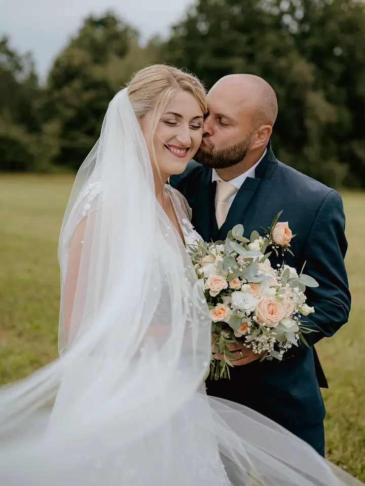
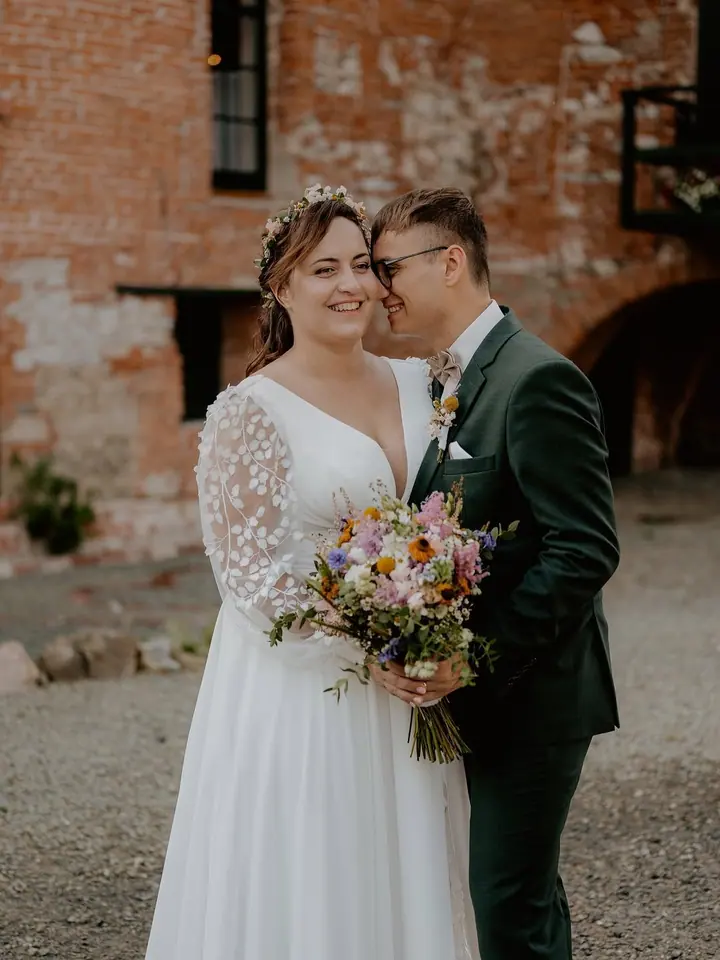
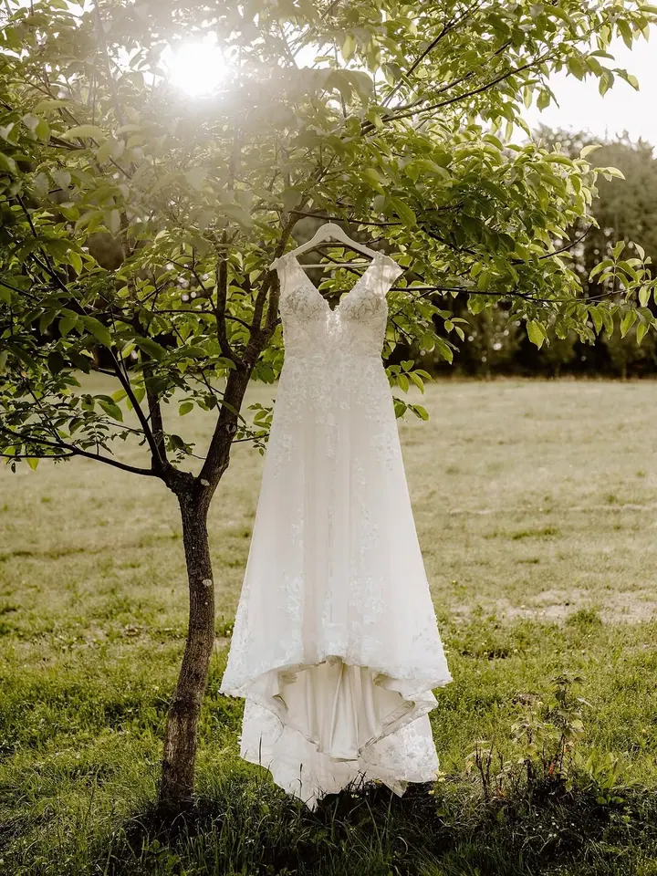

Svatební focení
Celý váš svatební den nafotím ve stylu reportáže, od příprav až po večer. Před svatbou se spolu potkáme a po ní dostanete 350 až 500 fotografií v online galerii a na USB disku.

Jmenuji se Veronika Kaláčová a jsem svatební a rodinná fotografka z Valašské Bystřice. Nejraději fotím venku, uprostřed valašských kopečků, po domluvě ráda přijedu i do …
Rezervovat termínJsem fotografka žijící na Valašsku a fotím hlavně svatby a rodiny. K tomu přidávám portréty, těhotenské focení, focení na rande a novorozence. Na všem mě baví stejná věc: láska mezi lidmi, kteří k sobě patří.


Rodinná a těhotenská focení probíhají venku v přírodě, nejčastěji kolem Valašské Bystřice, kde to mám nejradši. Nic nehrajeme, prostě se projdeme, děti můžou běhat a vy se můžete smát. Novorozence fotím v klidu u vás doma.
Svatby fotím jako reportáž celého dne, aby vám po ní zůstal ucelený příběh. Ještě před svatbou se spolu potkáme, probereme program a já se dozvím, na čem vám nejvíc záleží.
Co fotím
Celý váš svatební den nafotím ve stylu reportáže, od příprav až po večer. Před svatbou se spolu potkáme a po ní dostanete 350 až 500 fotografií v online galerii a na USB disku.
Krátká procházka venku, nejčastěji uprostřed valašských kopečků, s rodinou, dětmi nebo jen ve dvou. Focení trvá zhruba půl hodiny až hodinu a z náhledů si vyberete 15 upravených fotografií.
Čekání na miminko můžete mít uložené na fotkách, sami ve dvou nebo se staršími sourozenci. Fotíme venku v přírodě a fotky dostanete v barevné i černobílé verzi.
Prvních pár dní s miminkem nafotím přímo u vás doma, v klidu a bez spěchu. Focení trvá přibližně hodinu a půl až dvě hodiny.
Postup
Ozvěte se přes kontaktní formulář, e-mail nebo zprávu na Instagramu či Facebooku. U svatby prosím rovnou uveďte datum.
Společně vybereme místo a termín focení. U svatby se ještě předem potkáme na předsvatební schůzce.
Rodinné, rande a těhotenské focení trvá venku zhruba půl hodiny až hodinu. Svatbu fotím jako reportáž celého dne.
Z online náhledové galerie si vyberete fotky, které upravím v barevné i černobílé verzi. Hotové fotografie dostanete v online galerii, u svatby navíc na USB disku.
Otázky
Bydlím ve Valašské Bystřici a nejraději fotím tady, uprostřed valašských kopečků. Po domluvě ráda přijedu i do okolí Zlína, Vsetína a Rožnova pod Radhoštěm.
Z náhledové galerie si vyberete 15 fotografií, které upravím v barevné i černobílé verzi. Každá další fotka navíc stojí 200 Kč. Celé rodinné, rande nebo těhotenské focení vyjde na 2 000 Kč.
Předsvatební schůzku, celodenní reportáž, 350 až 500 fotografií, online galerii a USB disk se všemi fotkami, za 20 000 Kč. Půldenní nebo jiné kratší focení domlouvám individuálně.
Neupravené fotografie neposkytuji. Předávám jen fotky, které jsem pečlivě upravila, ve formátu JPEG přes online galerii.
Ano. Fotky ráda ukazuji v portfoliu na webu a sociálních sítích, ale pokud si to nepřejete, stačí mi to dát vědět předem.